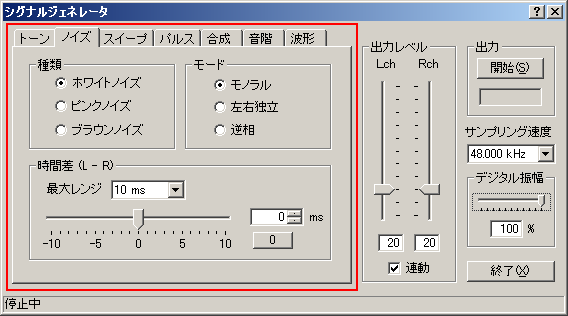
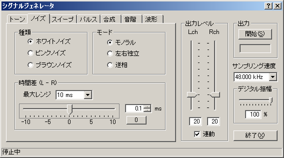
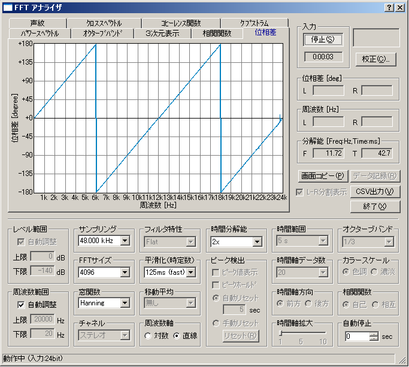

DSSF3 > RA > リファレンス > シグナルジェネレータ

| 項目 | 選択項目 | 説明 |
|---|---|---|
| 種類 | ホワイトノイズ | 1Hz当たりのエネルギーが一定で、高い音も低い音も一定のエネルギー成分をもちます。FFTアナライザのパワースペクトルでフラットに表示されます。ホワイトノイズは高域ではツイーターなどに対してパワーが強すぎるため、使用は気をつけてください。 |
| ピンクノイズ | オクターブ当たりのエネルギーが一定で、高い周波数ほどエネルギー成分が小さくなります。FFTアナライザのオクターブバンド分析でフラットに表示されます。周波数特性の測定には主にピンクノイズを使用してください。 | |
| ブラウンノイズ | 1Hz当たりのエネルギーが周波数の2乗に比例して低下します。1オクターブあたりでは3dBの割合でエネルギーが低下します。 | |
| モード | モノラル | 左右同一の波形の信号を出力します。ピンクノイズのモノラルは位相計の試験信号として使用すると左右両チャネルの全周波数の位相が即時測定できます。たとえばシグナルジェネレーターと、位相計を内部直結で測定すると、位相計でフラットに表示されます。 |
| 左右独立 | 左右独立(無相関）の波形の信号を出力します。 | |
| 逆相 | 左右逆相の波形の信号を出力します。 | |
| 時間差（L-R） | トーンの場合の位相差と同様、左右のチャンネル間で出力信号の時間差を指定します。[最大レンジ]でスライダーの設定可能な範囲を選択することができます。 | |


DSSF3 > RA > リファレンス > シグナルジェネレータ